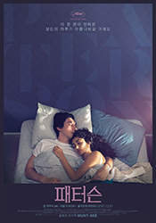

2. 좋아하는 취미가 이만큼!
- 책 읽기
취미 하면 가장 먼저 떠오르는 게 책읽기이긴 하지만, 어렸을 때는 정말 어떻게 그렇게 좋아했을까 싶을 정도로 책을 많이 읽었다. 내 인생에서 가장 큰 열정은 그 시절 책을 읽을 때 나왔던 것 같다. 가장 오래된 기억을 갖고 있는 책은 5살 때 읽은 <빨간머리 앤>과 6살 즈음 읽은 <소공녀>이다. 그 땐 각각 만화책과 동화책이었는데, 초등학생이 되어서 완역본을 펼쳤을 땐 정말 눈을 반짝이며 읽었던 기억이 난다. 세라와 앤 둘 다 상상을 좋아한다는 공통점이 있는데, 그 영향인지 나도 종종 소설책이나 영화에 나올 법한 공상을 하면서 즐거워하곤 한다. 나는 어른스러운 <소공녀>의 세라보다는 엉뚱하고, 가끔은 답답하고, 철도 없고, 기어이 한 번은 사고를 치고마는 <빨간머리 앤>의 앤을 훨씬 좋아했다. 내가 가장 많이 반복해서 읽었던 책도 <빨간머리 앤>이다. 앤의 유명한 대사 중 하나인 "'e'자가 붙은 앤('Anne')이라고 불러주세요!"만큼 사랑스러운 말을 나는 아직 본 적이 없다.
요샌 새 책을 사기보단 책장에 있는 책을 다시 꺼내보고 있다. 그런데 감상은 약간씩 달라져 있다. <빨간머리 앤>을 다시 펼칠 때마다 특히 그런 기분을 느낀다. 어쩌다 가끔 들르는 산책로에 벤치가 하나씩 늘어나고, 본 적 없는 가로등이 생기고, 새로 심어진 나무를 발견하는 기분이다. 초록지붕 집에 처음 왔던 앤보다 어린 나이였던 내가 어느새 앤이 대학을 졸업하고 선생님이 되는 나이를 따라잡아간다. 이해가 되지 않았던 감정이 훅 들어오거나, 예전과는 전혀 다른 느낌이 들기도 하고, 눈물이 나지 않았던 부분에서 북받쳐오거나 그 반대이기도 한다. 열 번을 넘게 같은 부분을 읽었는데 지루하기는 커녕 훨씬 다채로워지는 앤과 나를 보게 된다. 앤은 어른이 되어서도 사고를 친다. 열 살 때와 똑같이 어이없는 실수를 하고, 또 후회하고 자책하다가, 반성 끝에 자신을 받아들이며 성장한다. 그런 앤을 보다보면 나는 앤에게 공감을 할 수 밖에 없다. 어른이 되어간다고 생각했던 내가 사실은 별로 변하지 않았고, 조금씩 조금씩 감정이 쌓여가고 있을 뿐이란 걸 알게 된다.
페이지를 넘길 때 잔잔하게 파고드는 느낌이 정말 좋다. 그 분위기를 언제까지고 사랑할 것 같다.
- 혼자서 영화관 가기
스무 살이 되어서 생긴 취미인데, 시국이 시국이다보니 영화관을 못 가고 있어서 아쉽다. 영화를 볼 때는 오로지 영화 내용에만 집중하게 되는데, 그래서 다른 사람과 같이 가기 보단 혼자서 가는 걸 좋아하게 되었다. 한창 스트레스가 쌓여 있었을 적엔 인생의 유일한 낙이었다. 영화는 단순히 포스터 하나만 보고 예매를 하는 편이다. 그래서 독립영화나 예술영화도 가리지 않고 보곤 했다. 규모가 작은 영화는 상영관이 워낙 몇 없어서 왔다갔다 하는 데만도 시간이 많이 걸릴 때도 있다. 하지만 마음에 쏙 드는 영화를 발견한 날에는 기분이 무척이나 좋아진다.

 ◀이미지를 클릭하면 해당 영화의 예고편을 볼 수 있다.
◀이미지를 클릭하면 해당 영화의 예고편을 볼 수 있다.
흔히들 말하는 인생영화에 나는 이 두 영화를 꼽는다. <패터슨>은 '패터슨 시'의 버스기사이자, 시를 끄적이는 것을 좋아하는 주인공 패터슨을 보여준다. 같은 시간에 침대에서 일어나, 같은 버스를 몰고, 같은 정류장을 돌며, 매 저녁 같은 술집에 가는 패터슨은 평범한 하루를 시로 녹여낸다. <그랜드 부다페스트 호텔>은 '겪어본 적 없는 시대에 대한 향수'를 느끼는 등장인물들의 이야기이다. 2014년도 영화지만, 작년에 재개봉을 해서 보게 되었다. 아기자기하고 동화같은 색감과 분위기가 살인사건이라는 스릴러적인 소재와 유쾌하게 어우러지는 과정이 흥미로워서 나중에 한 번 더 보러 갔다.두 영화를 보면서 내가 낭만이라는 단어에 낭만이 있다는 것을 알았다. 인생을 자신만의 색으로 물들이는 사람들에 대한 동경이고, 낭만을 퍼트리는 사람들에 대한 존경이다. 몇 번이고 곱씹어봐도 예쁜 단어라고 생각한다. 그런 낭만들을 끊임없이 말해주는 사람들이 있어서 나는 계속 영화관을 찾는 것 같다.
- 내일도 오늘처럼
장소와 시간에 큰 제약없이 할 수 있는 취미를 많이 선호한다. 초등학생 때 스도쿠를 처음 접했는데, 온갖 메모를 끄적이다 마침내 빈칸없이 모든 숫자가 꽉 채워진 걸 보면 그렇게 뿌듯할 수가 없다. 일반적인 9x9 형태를 넘어서 16x16, 체인 스도쿠, 이중/삼중 스도쿠까지 접하다 보니 너무 재밌어서 스도쿠 책을 잔뜩 사놓았다. 언제 다 풀지는 모르겠다... 스도쿠는 손으로 직접 메모를 하는게 편한데, 피크로스는 핸드폰으로 하는 게 편한 퍼즐이다. 아무 생각없이 칸을 채우다가 완성된 그림을 보면 정말 신기하다. 완전 매니아인 사람들은 타임어택 같은 걸 정해두기도 한다는데, 나는 집중하면서 천천히 시간을 들이는 게 좋아서 그러지는 않는다. <I Love HUE>와 <Blendoku>라고 색상 그라데이션을 맞추는 핸드폰 퍼즐게임도 있는데 난이도가 어렵긴 해도 그라데이션들도 예쁘고 몰입도도 높아서 시간이 정말 훅훅 간다.
생각날 때마다 일기를 쓰거나, 자기 전에 asmr을 들으면서 편안한 기분으로 하루를 마치기도 하고, 산책을 나갈 땐 꼭 이어폰을 챙겨서 좋아하는 음악들을 들으면서 걷기도 한다. 별 것도 아닌 일들이 나중에 지나보면 내 하루를 잡고있다. 분명 어제나 오늘이나 다를 게 없었고 내일도 다를 게 없을텐데, 나는 내일을 기대하고 있다. 습관과도 같은 취미들은 같은 일상도 다른 것처럼 느끼게 해준다. △